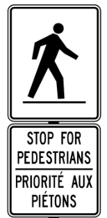

The Safer Roads Ottawa Program is a leading community partnership between Ottawa Fire Services, Ottawa Paramedic Service, Ottawa Police Service, Ottawa Public Health and the Public Works Department committed to preventing or eliminating road deaths and serious injuries for all people in the City
Le rapport annuel sur les collisions pr�sente des donn�es statistiques relatives aux collisions survenues sur les routes d�Ottawa, et ce, durant une p�riode de cinq ans.
The annual collisions report provides statistical data on all reported collisions on City of Ottawa roads during a five year period.
Remember to �Walk like your life depends on it!� and be aware of your surroundings!
The City of Ottawa has an extensive program to make streets safer for pedestrians that includes measures such as:
Accessible Pedestrian Signals (APS)
Accessible pedestrian signals (APS), formerly known as audible pedestrian signals, are devices that use audible, tactile, vibrotactile and visible methods to provide information that is accessible to all pedestrians, including people who are blind, visually impaired or deaf-blind.
Pedestrian Countdown Signal
The pedestrian countdown signal during the flashing �Don�t Walk� interval offers pedestrians more information on how much time they have to safely cross the intersection. Research has shown that countdown signals lead to fewer pedestrian-car collisions at intersections by providing pedestrians clearer information on when the lights will change. The installation of the pedestrian countdown signal will be done when a new traffic control signal or pedestrian signal is being installed, when an existing traffic control signal or pedestrian signal is being rebuilt as part of a road construction project, or through the Pedestrian Countdown Signal Installation Program. There are currently over 850 intersections across the city equipped with pedestrian countdown signals.
The Pedestrian Plan
The City produces a comprehensive Pedestrian Plan as part of the Transportation Master Plan to better integrate pedestrian travel into the transportation system.
School Zone Traffic Safety Program
Many children are walking and biking to school on our roads. However, younger children often lack the skills to negotiate traffic safely. Help them to walk - safely to school - by stressing important safety rules.
Pedestrian Crossovers
Refer to the image on the right for an example of a crossover sign

Pedestrian Crossovers are a type of traffic control used in Ottawa. Crossovers and their associated crosswalks are located at low speed, low-medium volume intersections, midblock and at roundabouts. Learn about the form, function and usage of pedestrian crossovers and see where in Ottawa they are installed.
What is a Pedestrian Crossover?
Pedestrian Crossovers are designated areas that allow pedestrians to safely cross roads where vehicles must yield to pedestrians when crossing. Pedestrian Crossovers are identified by specific signs and pavement markings. In some cases, but not always, they may also have pedestrian activated flashing beacons.
Visit our YouTube Page and click "show more" for the descriptive video text.
Pedestrian Crossovers in Ottawa
The City of Ottawa will be installing up to 60 Pedestrian Crossovers each year for the next three years as part of a City Council approved pilot program. Crossovers will be situated at warranted locations throughout the city, starting in the summer of 2016. In the first year, these locations will include: new crossings where no crossing existed before, retrofitting of existing crossings, and roundabouts.
Pedestrian Crossover Locations
Pedestrian Crossovers will be installed on low speed, low to medium volume roads, and at most roundabouts.
The locations of the planned 2016 Pedestrian Crossovers in Ottawa are shown in the map and table below. The list will be updated as new warranted locations are added.
When operating as a motor vehicle, cyclists will face the same responsibilities and fines as drivers - the new law requires cyclists to stop and yield the whole roadway to pedestrians.
When crossing with pedestrians, follow rules for pedestrians: dismount and walk your bike across the road.
Refer to "Roundabouts and Median Divided Roads" Section below for more details at these locations.
Pedestrian Crossovers have a local history dating back to the early 1960s when a large number were installed across the greater Ottawa area. There are several types of crossovers which are identified as Type 1 or Type 2 crossovers. Type 1 was used in Ottawa dating back to early 1960's. This type is distinguished by the side mounted signs, overhead signs on wires and flashers. It is the most complex and was used at multi-lane crossings with higher speeds and traffic volumes.
These treatments provided a solution to pedestrian needs for a number of years, but were questioned in terms of safety in the 1970's; as a result, in the mid-1980's, it was decided by Council that mid-block traffic control signals should be used in place of Pedestrian Crossovers and that Pedestrian Crossovers would no longer be implemented. At this time we do not intend to install the Type 1 crossovers again in Ottawa.
When the Making Ontario's Roads Safer Act, or Bill 31, was passed in June, 2015, Type 2 crossovers were created. Pedestrian Crossovers to be installed in Ottawa beginning June 2016 fall under Type 2 designation only.
Type 2 includes three formats:
B - Distinguished by overhead signs, side mounted signs, and rapid rectangular flashing beacons. These are typically used on arterial/major collector roads with higher speeds (up to 60km/h).
C - Distinguished by side mounted signs and rapid rectangular flashing beacons. These are typically used on collector roads, or lower volume multi-lane roundabouts.
D - This type is the most basic. It includes only the side mounted signs. These are typically used on local roads, or single lane roundabouts.
Motorcycle Safety
In Ottawa from 2009-2013 people who ride motorcycles were involved in 790 collisions leading to 12 fatalities and 542 injuries on Ottawa streets.
People who ride motorcycles are considered vulnerable road users for the following reasons:
Motorcyclists have on two points of contact on the road and require great skill, balance and diligence to prevent collisions.
Motorcyclist are small so they are difficult to see and gauging their speed and distance
The Ottawa Safety Council offers motorcycle training for all skill levels. Visit www.ottawasafetycouncil.ca for more information.
Every May, the motorcycle community of Ottawa and SRO launches ?Keep an Eye Out for Motorcycle? campaign.
Tips for Motorist
Keep a safe distance when following a motorcycle - at least two seconds
Motorcycles use a full lane - treat them like other vehicles
Check your mirrors and blind spots frequently, especially before changing lanes -a motorcycle is small enough to be entirely hidden within your blind spot
Pay special attention at intersections, where almost 50% of motorcycle collisions occur
2018 Selective Traffic Enforcement Program (STEP)
Table 1 - 2018 Selective Traffic Enforcement Program (STEP)
Month
Theme #1
Theme #2
January
Follow too Close
Stop Sign Violation
February
Vehicle Occupant Restraints
(includes child car seats)
Red Light Running
March
Distracted Driving
Speeding
April
School Bus / School Zone
Safety
Cycling Safety
May
Motorcycle Safety
Unsafe Vehicles and Heavy
Trucks
June
Pedestrian Safety
Construction Zones
July
Cycling Safety
Red Light Running
August
Impaired Driving
Roundabouts
September
School Bus/School Zone
Safety
Vehicle Occupant Restraints
(includes child car seats)
October
Distracted Driving
Speeding
November
Red Light Running
Stop Sign Violations
December
Impaired Driving
Unsafe Lane Changes
Ottawa's Selective Traffic Enforcement Program (S.T.E.P.) is implemented under the banner of Safer Roads Ottawa. Each month, two traffic safety priorities (themes) are highlighted for additional enforcement. An analysis of the City's traffic collision / injury data helps to determine the level of emphasis that each traffic safety priority receives. The severity of the issue will dictate if some themes receive additional months of enforcement.
Background information
In terms of timing of specific themes, consideration is given to the following:
Annual national / provincial campaigns
Seasonal road safety topics (e.g.. impaired driving in December and school bus / school zone traffic safety in September and March)
Dates of Safer Roads Ottawa campaigns and initiatives